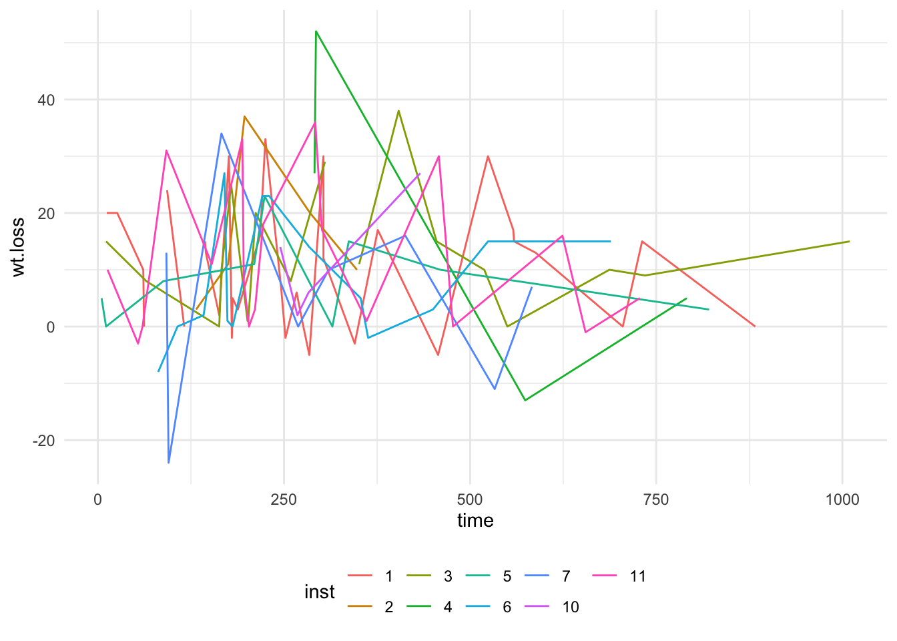

Example Quarto Report
Clinical Trial/Study Report
The lung data set is found in the survival R package. Try to load the lung data set in R by issuing the following commands at the console:
See the data dictionary in the markdown table below:
| Column Name | Key |
|---|---|
| inst | Institution code |
| status | censoring status 1=censored, 2=dead |
| age | Age in years |
| sex | Male=1 Female=2 |
| time | Survival time in days |
| ph.ecog | ECOG performance score (0=good 5=dead) |
| ph.karno | Karnofsky performance score (bad=0-good=100) rated by physician |
| pat.karno | Karnofsky performance score as rated by patient |
| meal.cal | Calories consumed at meals |
| wt.loss | Weight loss in last six months |
Use R inside Quarto to create reproducible tables and figures with your data. If you’re already using R for your programming, Quarto is very similar to RMarkdown!
Load your data and call it back throughout the document to save yourself time when you update the data in the report.
Many packages, such as dplyr facilitate the ease of exploring your data. glimpse() shows us the dimensions of our dataframe and then the first 19 observations of each column (and the column type (i.e. ‘fct’ for factor)).
Note that there are five types of callouts, including: note, tip, warning, caution, and important.

- Quarto includes support for Observable JS (JavaScript)
- create and publish notebooks
- use Observable JS (“OJS”) in standalone documents
- works in any Quarto document (plain markdown as well as Jupyter and Knitr documents)
- include your code in an {ojs} executable code block
- QMD can be used to create data driven reports for your collaborators or even to write entire manuscripts!
- QMD anatomy includes
- YAML metadata
- markdown text
- code
- output
- YAML metadata
- QMD is wizardry!